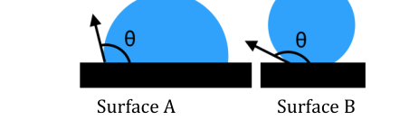
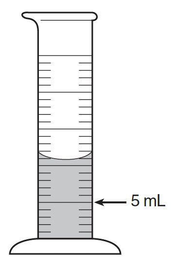
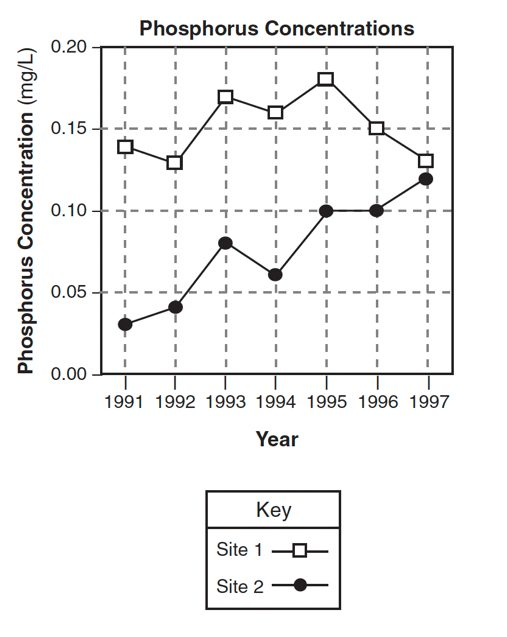
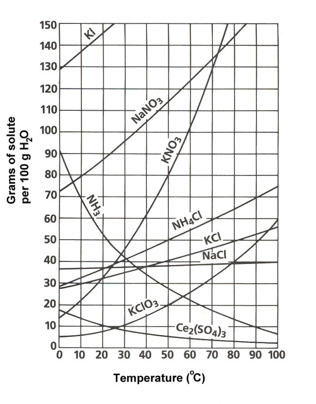
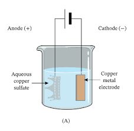
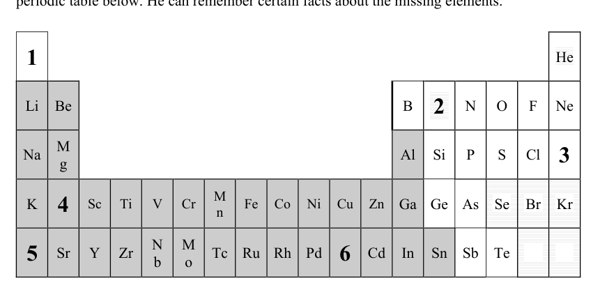

This revision exam covers Immunology, Minerals to Metals, Water Analysis and some general science skills.
Section A: Multiple choice (28 marks)
Immunology
Bacteria, viruses and prions can all be pathogenic. Which is an appropriate way of describing them?
A swab was taken from the back of the throat of a person with an unknown bacterial infection. What technique would a scientist use to identify the bacteria?
Bacteria can reproduce very quickly. How do bacteria reproduce?
Tetanus is an infection caused by the bacterium Clostridium tetani. Tetanus spores are everywhere in the environment, including soil, dust and manure, and develop into bacteria when they enter the body. What would be an appropriate treatment for a patient with tetanus?
Rabies is a viral disease spread to people by infected animals. A person bitten by an infected animal should be given an injection of specific antibodies. After the injection, this person has
Inflammation occurs when the body meets a pathogen or when cells are injured. The affected area becomes swollen, red and painful. What causes these symptoms?
Minerals to Metals
Calcium has an atomic number of 20. The electron configuration of the calcium ion is:
Reactivity is how readily a substance undergoes chemical reactions. When comparing reactivity,
2KI(aq) + Pb(NO3)2(aq) → 2KNO3(aq) + PbI2(s). This reaction can be described as
Element X can displace zinc from a solution, but it cannot displace magnesium. Which conclusion can be drawn?
Aqueous sodium chloride was electrolysed at 6 V. Gas was produced rapidly at the negative electrode. The gas is likely to be
Calculate the percentage of copper in malachite, Cu2CO3(OH)2. (Cu = 63.55, C = 12, O = 16, H = 1)
Molar mass = 2 × 63.55 + 12 + 5 × 16 + 2 × 1 = 221.1. % Cu = 127.1 ÷ 221.1 × 100 = 57%.
Alloys are made by combining known ratios of metals to give desirable properties. Which statement about alloy properties is most correct?
Alloys still conduct, but usually a little less well, because the different-sized atoms disrupt the lattice. Alloys often melt at lower temperatures (e.g. solder), and their density lies between those of their components.
Water Analysis
Which of the following substances is soluble in water?

The same substance can interact differently with two different surfaces. Above, water is placed on two surfaces. From this we can tell that
Which statement explains why detergents are needed to remove dirt from clothes effectively, rather than just water?
Which reaction statement is accurate?
The salt produced when sulfuric acid and zinc carbonate are mixed is
Consider these four solutions: 1 CuSO4, 2 LiCl, 3 Al(NO3)3, 4 Pb(NO3)2. Which two can be mixed to form a precipitate?
Pb2+ + SO42− → PbSO4(s). (2 and 4 would also give PbCl2, but that pair isn't offered.)
Which of the following properties is not associated with bases?
When a positively charged rod is held near a thin stream of water from a tap, the stream bends towards the rod. What can be inferred about water molecules?
Which of the following statements is correct?
A titration used NaOH to neutralise the acids in different soft drinks:
| Soft drink | Volume of drink | Volume of NaOH needed |
|---|---|---|
| A | 100 mL | 45 mL |
| B | 50 mL | 10 mL |
| C | 10 mL | 5 mL |
| D | 20 mL | 6 mL |
Which soft drink has the lowest concentration of acid?
NaOH needed per mL of drink: A 0.45, B 0.2, C 0.5, D 0.3. B needs the least.
General science

How much water should be removed from the measuring cylinder above to leave 5 mL in it?
The cylinder holds 11 mL (read at the bottom of the meniscus); 11 − 5 = 6 mL.

Compounds containing phosphorus that are dumped into the environment can affect ecosystems because phosphorus acts as a fertiliser. The graph shows phosphorus concentrations measured each June at two sites from 1991 to 1997. Which statement is a valid inference based on the graph?
The next 3 questions refer to the following information.
Vitamin C is water-soluble, so the body can't store it; excess vitamin C is passed in urine. It has been hypothesised that taking vitamin C tablets every day will prevent a person from developing cold symptoms. To test this, 20 000 volunteers were divided into four groups. Each volunteer took a white pill every morning for a year.
| Group | Volunteers | Contents of pill | % who developed cold symptoms |
|---|---|---|---|
| 1 | 5000 | 5 g of sugar only | 20 |
| 2 | 5000 | 5 g of sugar and 0.1 g of vitamin C | 19 |
| 3 | 5000 | 5 g of sugar and 0.2 g of vitamin C | 21 |
| 4 | 5000 | 5 g of sugar and 0.3 g of vitamin C | 22 |
Which factor most likely had the greatest influence on these results?
Which statement is a valid inference based on the results?
Which group was the control in this investigation?
Section B: Short answer (46 marks)
Water and solubility
Complete the table. (Type formulas with ordinary numbers.)
| Name of acid or base | Formula |
|---|---|
| Hydrochloric acid | |
| Carbonic acid | |
| Ammonium hydroxide |
Write balanced chemical equations. (States are not needed.)
- Sulfuric acid + sodium hydroxide: H2SO4 + NaOH → + H2O
- Hydrochloric acid + sodium carbonate: HCl + Na2CO3 → + + H2O
List two properties of water that make it a good solvent.
Any two:
- It is polar: its uneven distribution of charge attracts other polar molecules and ions.
- It can form hydrogen bonds with other molecules.
- It is a liquid over a wide temperature range (and abundant on Earth).
Use the solubility rules to predict whether each reaction forms a precipitate, and give its formula.
| Reactants | Precipitate? | Formula |
|---|---|---|
| AgNO3 + NaCl | ||
| K2S + Pb(NO3)2 |
Question 5 (4 marks)
Use the solubility curves below to answer the questions.

What mass of KNO3 will dissolve in 100 g of water at 50 °C?
If only 70 g of KNO3 was dissolved in 100 g of water at 50 °C, what word describes this solution?
At what temperature will 160 g of NaNO3 just dissolve in 200 g of water?
160 g in 200 g of water is 80 g per 100 g. The NaNO3 curve reaches 80 g at about 10 °C.
20 g of KClO3 dissolves in 100 g of water at 50 °C. How much KClO3 will crystallise when the temperature drops to 10 °C?
About 7 g dissolves at 10 °C, so about 20 − 7 = 13 g crystallises.
Question 6 (2 marks)
Use these tables to answer the question.
| Metal | Colour in Bunsen flame |
|---|---|
| Sodium | yellow/orange |
| Potassium | lilac |
| Lithium | reddish |
| Copper | green |
| Barium | apple green |
| Cation | Test with NaOH: colour of precipitate |
|---|---|
| Cu2+ | light blue |
| Fe2+ | olive green |
| Ba2+ | white |
| Fe3+ | orange |
| Li+, Na+, K+ | no precipitate |
| NH4+ | no precipitate |
| Anion | Test with Ag+ | Test with Ba2+ |
|---|---|---|
| Cl− | white | nil |
| Br− | cream | nil |
| I− | yellow precipitate (with Pb2+) | nil |
| SO42− | none | white |
- Solution 1 gives a green flame. It forms a precipitate with NaOH that is the same colour as the solution. In the anion tests, it gives a strong white precipitate with Ba2+ but none with Ag+.
- Solution 2 gives no flame colour and no precipitate with NaOH, but a pungent smell is detected on heating and red litmus turns blue. In the anion tests, it gives no precipitate with Ag+ but a yellow precipitate with Pb2+.
| Solution | Cation | Anion | Formula |
|---|---|---|---|
| 1 | |||
| 2 |
Minerals to Metals
Question 7 (5 marks)
The diagram represents the structure of silver.

What feature shown in the diagram makes silver a good conductor of heat?
The delocalised electrons are free to move and transfer heat energy quickly.
How does the structure of silver make it highly ductile? Define ductile in your answer.
Ductile means it can be drawn out into wires (1 mark). The metal cations are arranged in layers which can easily slide past one another, held together by the sea of electrons (1 mark).
If this lattice broke down, would it form cations or anions? Explain.
Cations only: it is made of metal atoms only, which form positive metal ions. There are no non-metals to form anions.
What would be the charge of the ions?
Question 8 (5 marks)
In the Minerals to Metals topic you extracted copper from its ore, malachite. First the malachite was crushed into smaller pieces using a mortar and pestle.
Why is it important to crush the ore at the start of the extraction?
To increase the surface area, which increases the rate of reaction, so that all of the copper can be extracted from the ore.
Sulfuric acid was then added to the crushed ore. What were the products of this reaction?
Copper(II) sulfate, CuSO4 (plus water and carbon dioxide).
The mixture was filtered and the residue discarded. Two nickel electrodes were placed in the filtrate and connected to the terminals of a DC power supply.
Why was DC used instead of AC?
With DC, the electrons flow in only one direction, so there is a continual flow that deposits copper on one electrode (the cathode).
At which electrode would the copper metal appear?
Equation: Cu2+ + e− →
Question 9 (3 marks)

- In the external wire, electrons flow to the .
ii. The cathode is on the .
iii. Cu2+ ions flow to the .
Immunology
Question 10 (11 marks)
Case study: Zika fever
Zika fever is a rapidly emerging viral disease. It is most commonly passed from one person to another by the Aedes species of mosquito.
Zika fever in people was discovered in Uganda in 1947. It was thought that a mosquito bite transferred the virus from monkeys to humans.
The symptoms of Zika fever are usually mild, and 80% of infected people show no symptoms. Symptoms include fever, rash, headaches and muscle pain. Infection of pregnant women, however, can cause severe defects in their babies.
When scientists try to identify a particular disease, they can look for specific antibodies in infected people. Scientists trying to identify Zika infections found that antibody tests often gave incorrect results, because the tests could not always tell the difference between antibodies produced against the Zika virus and antibodies produced against other viruses.
Aedes mosquitoes are not found on every continent, and they cannot fly great distances. Vaccines for the Zika virus are currently being trialled.
During 2015 the Zika virus spread rapidly across Brazil. As the Olympics were being held in Rio (Brazil) the following year, there was much concern about transmission across the whole world.
Zika fever is caused by a virus. From the case study, describe one symptom of the disease.
Any one: fever, rash, headache, muscle pain.
Which important immune cells make the specific antibodies to the Zika virus?
A traveller planning a trip to Brazil decided that his normal seasonal flu vaccination would protect him against the Zika virus. Is he correct? Justify your answer.
No: vaccines are specific to a particular pathogen (its antigens), so the flu vaccine gives no protection against Zika.
When the Zika virus enters the body, non-specific defences such as the inflammatory response try to control it. Outline what happens during an inflammatory response.
Histamine is released, increasing blood flow to the area and bringing white blood cells there; the area becomes red, painful, swollen and hot.
What treatment could relieve the symptoms of an inflammatory response?
Describe two approaches, other than vaccination, that government health officials could use to reduce the spread of the Zika virus.
Any two, for example:
- Quarantine infected people.
- Mosquito control, e.g. insecticides and removing standing water, to get rid of the vector.
- Advise people to use repellent, nets and protective clothing.
- Any other reasonable suggestion.
During 2015 the Zika virus spread rapidly through Brazil. Was this outbreak endemic, epidemic or pandemic? Explain.
Epidemic (1 mark): a local, sudden increase in cases over a short period of time (1 mark).
Scientists tried to develop a Zika vaccine using a live, attenuated virus injected into test subjects. Outline the body's response to the vaccination.
Macrophages engulf the virus and present its antigens. Helper T cells activate B cells, which form plasma cells and memory cells (1 mark). The plasma cells produce antibodies against the virus, and the memory cells stay to give a fast response to future infection (1 mark).
Scientific method
Question 11 (5 marks)
A student drew part of the periodic table from memory, but can't remember the elements in the positions numbered 1–6.

Give the number of the element that fits each description.
- The noble gas:
- An element that is highly reactive in cold water:
- The element with electron structure 2, 4:
- A shiny, malleable metal that is very unreactive:
- A good conductor of heat and electricity that forms limewater when combined with hydroxide:
1 = hydrogen, 2 = carbon, 3 = argon, 4 = calcium (Ca(OH)2 is limewater), 5 = rubidium, 6 = silver.